REFERENCE → DESIGN
Vizcom helped translate the sketch into a realistic, visually consistent formalwear concept without abandoning the original silhouette.
A sourced fashion reference refined through Vizcom, developed across consistent viewpoints, and reconstructed as an interactive 3D garment study in Meshy.
The sourced sketch established the core formalwear language before AI-assisted interpretation and dimensional development.
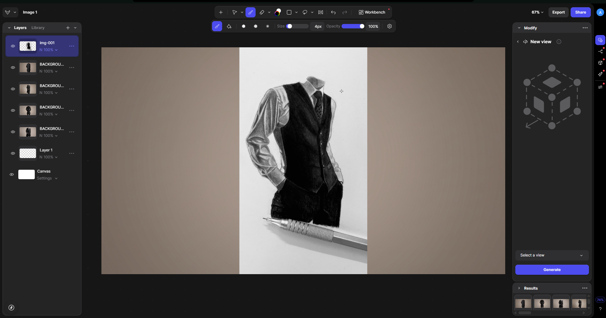
Vizcom was used to translate the sketch into a more realistic design language and establish consistent front, rear and three-quarter information before 3D reconstruction.
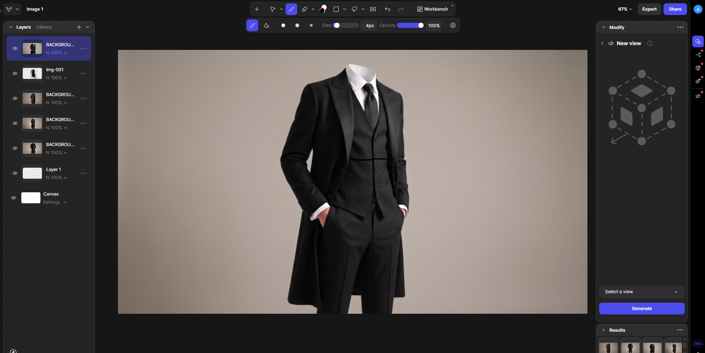
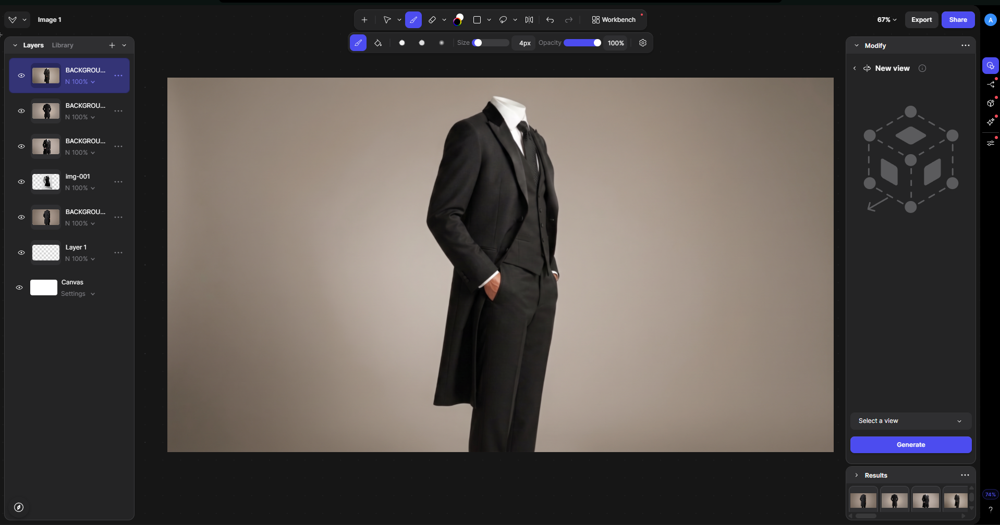
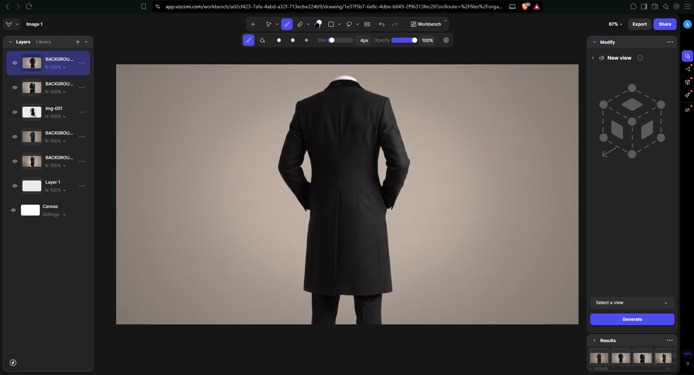
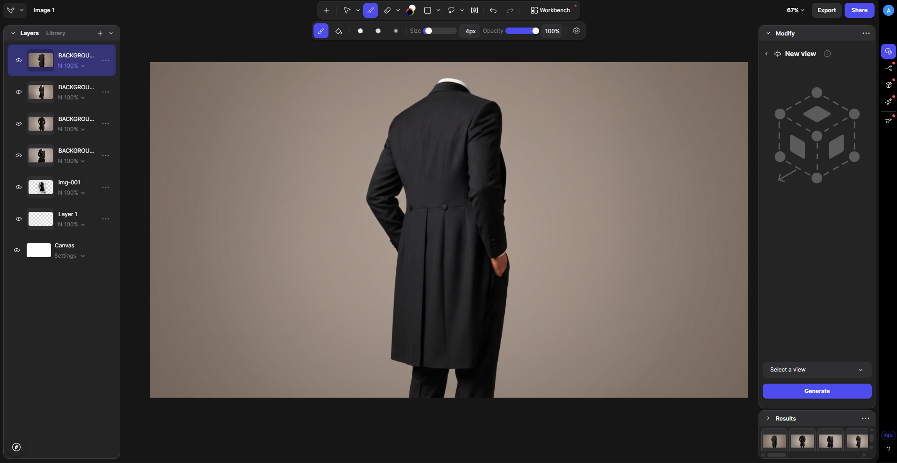
The refined views were treated as different observations of the same garment rather than separate designs, giving the 3D system stronger front-to-back information.
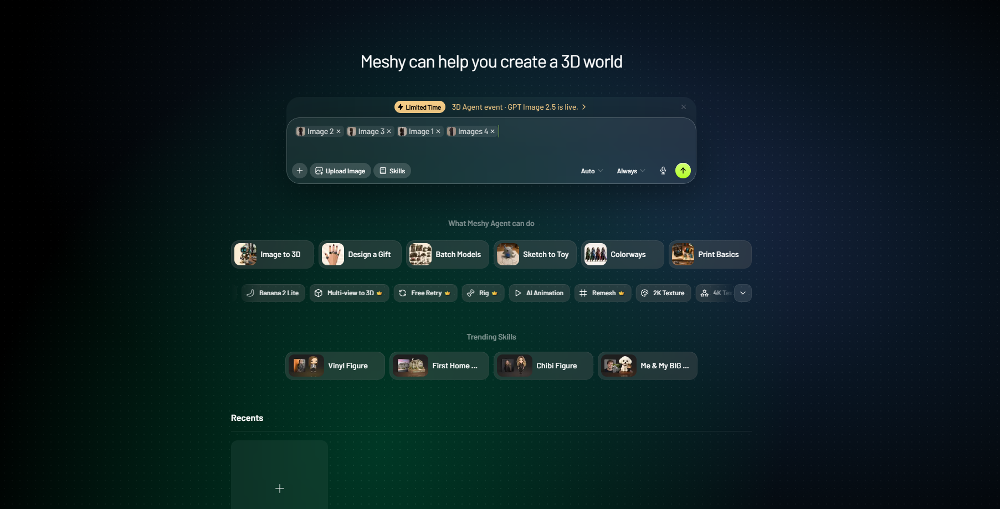
The final textured reconstruction preserves the core outfit identity while making the garment readable from freely rotated viewpoints.
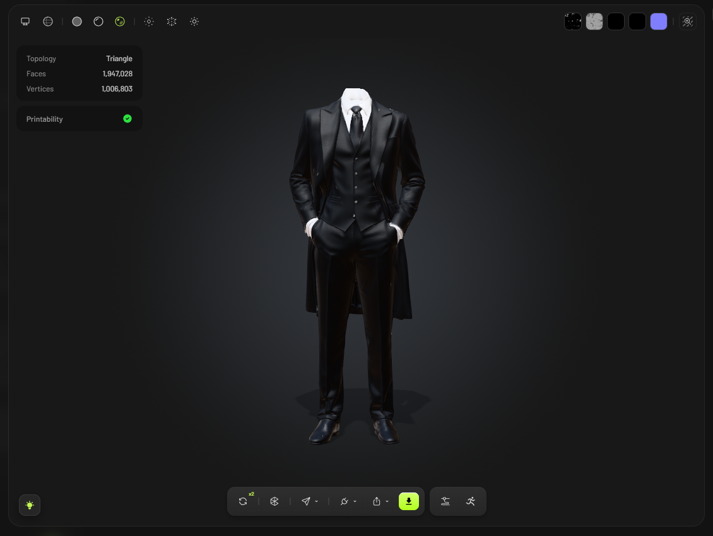
Primary front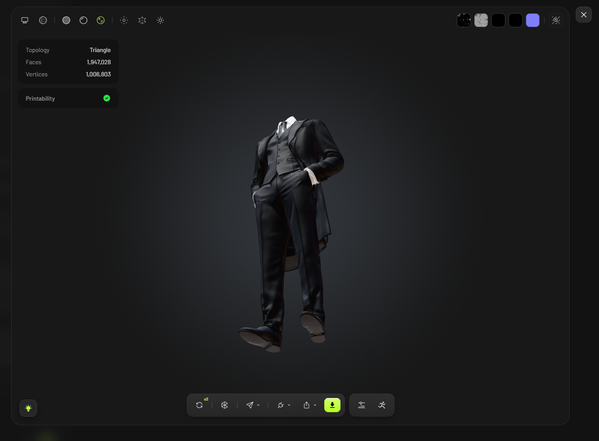
Perspective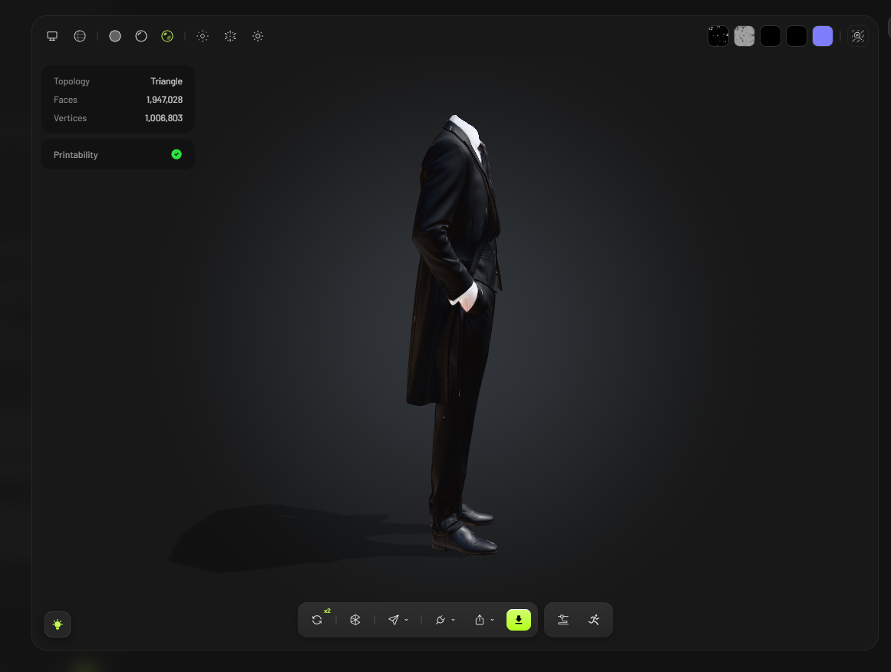
Side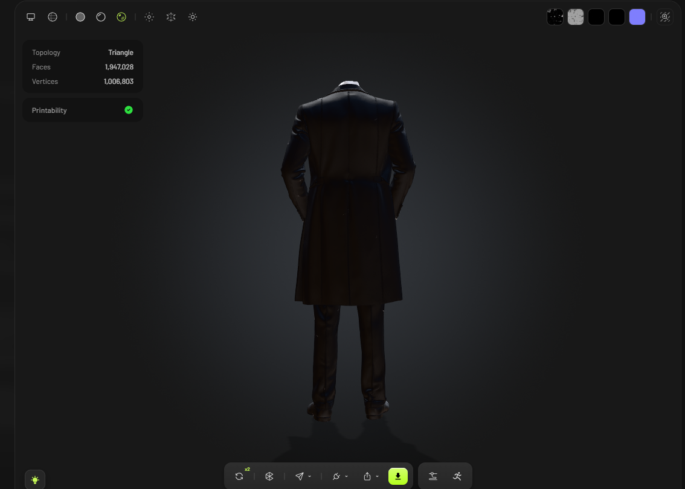
Rear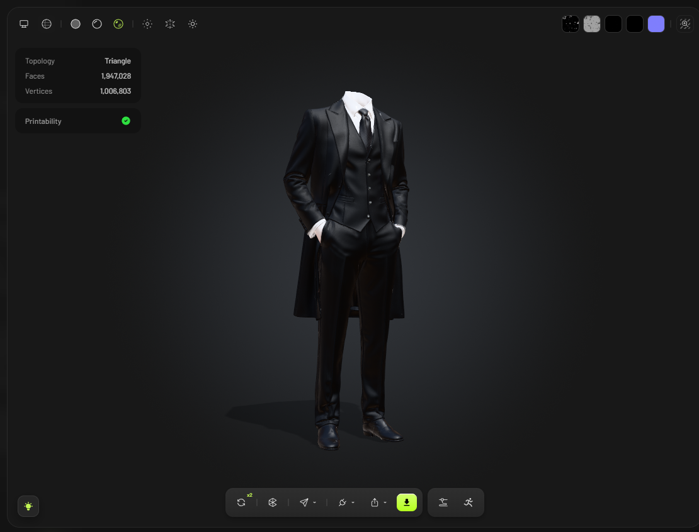
Three-quarterClay-style inspection separates geometry from material appearance, making the actual coat volume, waist shaping and garment boundaries easier to evaluate.
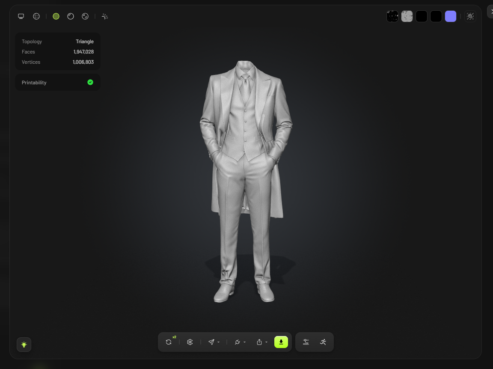
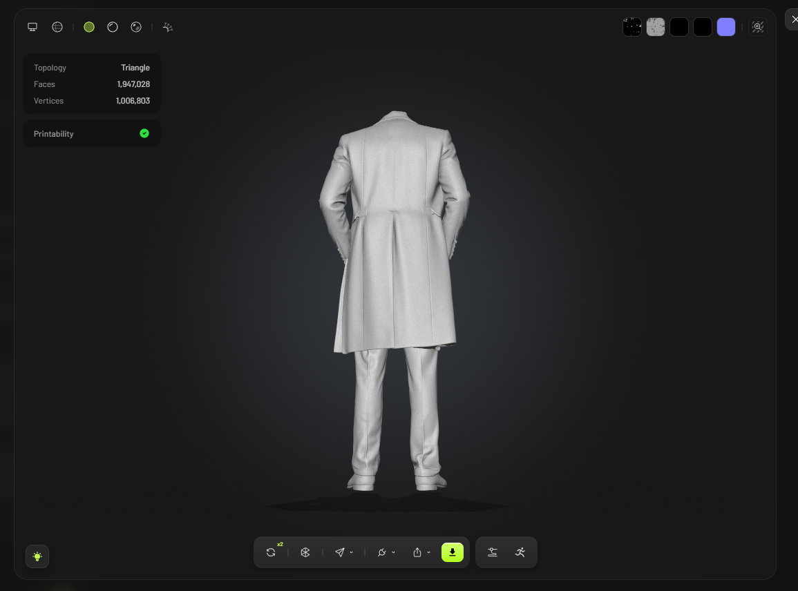
The final Meshy reconstruction reports a high-density triangular mesh and passes the platform's printability check.
Vizcom's Make 3D workflow was also tested as an alternate route. Meshy was retained for the final reconstruction, while this experiment documents broader tool exploration.
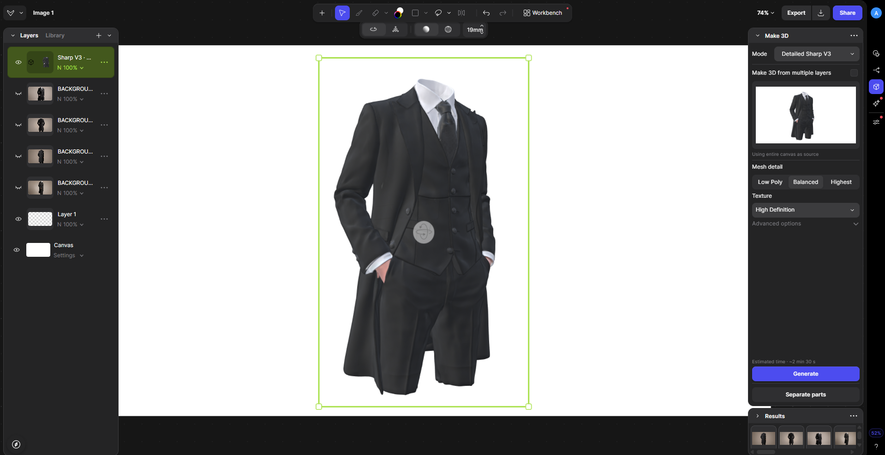
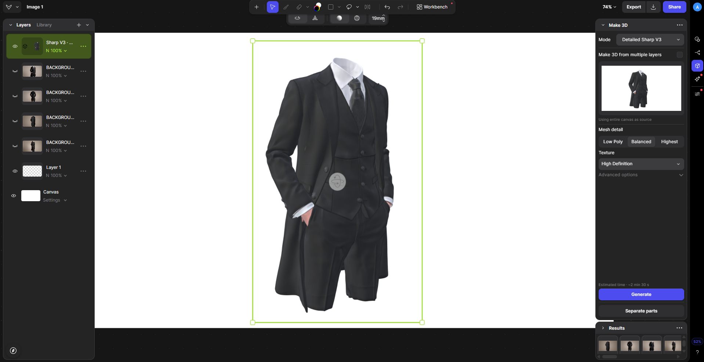
The project evolved from a single 2D reference into a controlled multi-view design set and finally into inspectable 3D geometry.
Vizcom helped translate the sketch into a realistic, visually consistent formalwear concept without abandoning the original silhouette.
Front and rear information reduced the amount of unseen garment structure that the 3D system had to infer.
Meshy reconstructed one spatial model that can be inspected from arbitrary angles rather than only the supplied views.
The fitted waistcoat, long outer coat, tailored trousers and hands-in-pockets stance remain the main visual anchors.
Textured and clay views allow separate evaluation of appearance and geometry, supported by topology and printability data.
The outcome is a presentation-ready 3D interpretation that documents both experimentation and the final reconstruction path.